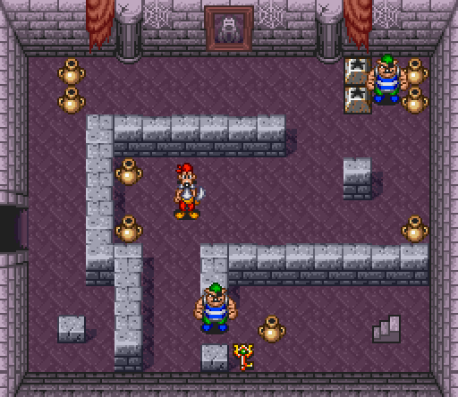
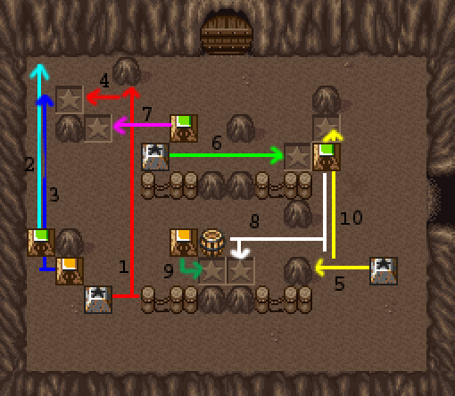

Goof troop is an action-adventure video game. There are 5 levels composed of different screens or rooms, and the goal of the game is to open the boss door at the end of each level. To get to the goal, you have to look around the screens to find keys, solve puzzles, kill pirates, and make use of special tools until you find the key for the boss room, and a variety of other challenges like dark rooms and moving platforms! There are a lot of doors that you must open in order to progress and they open by doing all of these. Sometimes opening a door can be arranged by killing the pirates in that room, other times solving puzzles, pressing switches or using a key.
There’s a password system where you can enter a desired stage if you introduce the password and you will start from the beginning. You will get a password after beating a stage. If you game over, you can enter the password to keep playing the last stage you were at. You have all passwords at the end of this guide.
REGIONAL DIFFERENCES
In the japanese version there are different difficulties you can
are different difficulties you can choose. Each difficulty has the same stages and screens but the puzzles are different, and there will be slight differences like secondary weapons in places that are not in the EU/US version, missing blocks.. etc.
You can choose between two characters. Goofy, which is slow but stronger enough to kill all pirates in one hit, and Max, which is faster but much weaker so some of the pirates take two hits and also you get slower while carrying something in your arms. Them both can kill in one hit with a bomb.
The game has a simultaneous cooperative mode where a where a second player can join and play at the same time, and you can cooperate with him, catch their barrels to help kill the pirates and work together to beat puzzles and make it through other challenges together. If a second player joins, you can only carry 1 special tool per player, and you can respawn if one of you die, by crossing to a new screen and pressing the select button.
Although Goofy and Max cannot fight directly, they can use various methods to defeat enemies such as barrels, coconuts, pots and bombs that you will find all over the screens, laying on the floor. Goofy and Max can lift their arms up to pick up these items. You can use other methods like kicking blocks towards the enemies, bomb them or bait them to their death.
You can remap the buttons in the option menu. You can switch the throw type in the options menu. Type 1 you will pick up an item and throw it by pressing the button again, and Type 2 where you will hold the item if you hold the action button and you will throw it once you release it.
There are barrels, plants, pots and bombs laying all over the screens that Goofy and Max can pick to throw at enemies or press switches. You can throw these to the second player to cooperate, but if the second player doesn’t have its arms up, you will stun him (but it doesn’t deal damage)
Once you hit an enemy, it will die, or if he doesn’t die, he will get on i-frames and will get stunned. The enemies are harmless while they are on i-frames (except red pirate). Each enemy walks towards you and they can do different things depending of the color and type.
There are blocks in this game that you need to kick in order to solve puzzles. You need to kick them into sockets to solve them. These can be used to kill enemies and they can collide with second player and break! Some blocks explode after a while after getting kicked, or they explode when they collide with an enemy or the other
player. Careful! The other player will die if he gets hit by an explosive block. There are three different colors of blocks. The green one, which last for longer until it explodes, the yellow one that last less, and the red one that explodes almost right away.
There are special tools that can help the player to be used as a weapon to stun enemies, make bridges and zip lines to cross paths, or helping yourself through other challenges. You can find them laying on the floor. Once you pick up a special tool, it will be replaced by the old one and the old one will fall on the ground. You can hold up to 2 in single player, and only one per player as cooperative. You need to find these to progress in the game. If you want to switch special tools with the other player, you can take a death and both weapons will go to the player alive. Hover over the weapon you want to keep and the other weapon will be sent to the other player when this respawns. These special tools are mostly situational.
You have hearts, which lets you tank a hit before dying and get on invincible frames (i-frames) which means you will be invulnerable for a short amount of time. You also have lives,
and once you lose one, you will respawn in i-frames at the last door you entered, and once you lose all lifes, you will get to a continue screen. You start with 0 continues and 2 lives. You can get more hearts, lifes and continues picking up bonus items that are all over the stages, either laying on the floor, lifting pots or digging using a special tool. These can be fruits and diamonds. Each bonus item give you different things. Each player has its own hearts and lives, and continues are shared.They are displayed on top of the screen, but you can’t see the continues. If you have a lot of lifes, the bonus items might appear with less frequency under barrels or digging. You start with 2 lifes and 0 continues and you find the continues through the game.
In coop, you can respawn if the other player runs out of lifes and you cross the screen. You can use this to get more lifes.
Once you cross a screen, your check point will be set on the door you last crossed, and the room will reset completely. Barrels and pots will be back, blocks will appear in the way you first found them, and enemies will be back on the same spot you encountered them for the first time. If you mess up a screen, you can go back and enter the room again so everything will be back to how it was. Bonus items such as lifes, hearts and continues that were laying on the floor won’t respawn.
BONUS ITEMS
CHERRY BANANAS RED DIAMOND BLUE DIAMOND
Gives you 1 heart Gives you 3 hearts Gives you 1 life Gives you 1 continue
TIPS
Hold your hands up at all times in rooms with cannons or pirates that throw barrels. You won’t get hit like that and you can also use them against enemies. Throw the item right away to have your hands empty and ready for another item falling on you.
Use the grapple to push and stun enemies. You can push them out of platforms, and you can make it past them when they are stunned. You can use this to push them towards a threat to kill them.
You can pick up barrels with the grapple so you can reach barrels and items that are very far away in your advantage. You can also pick up fruits and diamonds with the grapple.
Use the barrels to stun the enemies and make it through them while they are on i-frames. You can also push them out of a platform if they are too close to the edge.
Use the hearts to tank a hit and make it past enemies and threats and run to the objectives quickly. You can go in and out a screen to respawn barrels and pots and you can lift them to find more fruits and lifes, but remember, if you have a lot of lifes already, these spawns might be less frequent so it will take more time to find fruits when lifting pots or barrels.
If a room is not going according to plan, you can always exit the room and enter it again and everything will be back to how you found it for the first time. You can pause the game to have more time to visualize the screen and make a strategy. You can also go in and out infinitely to respawn the soil while digging out some bonus.
Set the spawn point in a convenient door. Once you cross a door, you will respawn there if you lose a life. If a screen is too long or another door is more convenient, crossthat door to spawn there in case you die. You can use this to go back to another room quickly after dying or falling down a platform on purpose, or using the respawn i-frames to make it through enemies and back to the exit quickly.
Pirates can become their own enemy! You can take advantage of pirates that throw barrels to make them kill their own mates, or pirates that can kick blocks to bait them into kicking a block to their mates!
You can bait pirates to your advantage. You can bait them towards a cannon, towards blocks so you can kick them afterwards, towards bombs or other threats! The pirates get tired after a while, so you can run past them then.
COOPERATIVE TIPS!
Playing as cooperative has a lot of advantages since you have another player helping you solving puzzles and killing enemies! The differences between the characters is what makes the cooperative so good, because each player gets a rol during the game.
Put your arms up at all times you can. In a room where there is a lot of barrels, or against a
boss where you have to catch items. Pay attention to what your mate is doing in case he wants to throw a barrel to you to cooperate against the enemies! If you have your arms up almost at all times, you will make sure you catch any barrel your mate could throw at you, without needing to pay so much attention to what he is doing.
In general, I would use Max as the player that goes around the screen picking up keys and grapples to make it through the levels very fast, meanwhile Goofy is looking for your safety, baiting the pirates towards him, or killing them for you. Let goofy carry the bell at all times, and he could also hold the grapple to stun enemies and protect Max in the way.
You can use Max to go around and pick up barrels and throw them to Goofy since he deals more damage.
In other occasions, you can use Max to drag all the pirates with him, while goofy kills them all,
or drag them away from goofy while he fights other enemies. This is a good strategy in the last boss of the game since he summons more pirates.
One player can stand in front of a door and watch the other player going through the screen. You can use this to exit the screen if you see that your team mate is into trouble, to not receive any damage or reset the screen right away.
In cooperative, once you die, you can exit the room and you can press start again to re-join and keep playing the game. You will spawn with 2 lifes. If you have less than 2 lifes, you can take an intentional death and exit the room so the other player can come back with 2 lifes again.
If one of the players die, the player alive will receive the special tool that the other player was holding. You can take intentional deaths to give Max all the special tools to make it past the screen and then revive in the next screen.
First, go to the right screen.
Pick up the grapple and the cherries and go back to the left.
Go to the upper screen.
Pick up some barrels and kill the fat enemy. Use the grapple to pick up the barrel on the left across the water. You could kick the block and kill the other pirates, otherwise use more barrels. Kick the last block to the left to pick up the continue. Then kick the rest of the blocks to the left and pick the fruits.
Go back right and up.
Ignore the pirates and go up.
Kill the snake with the grapple, ignore the pirates and go up.
Grab a pot just in case the bee comes closer. Kick the right block down to open the door.
Pick up the plank and leave the screen from where you came.
Go down, and in the next screen go to the right, cross the bridge. Watch out with the bee, and you can ignore the pirates once again.
You need to kill all pirates to open the gate. Get away from the barrel and pick it up with the grapple, you have enough room to kill the pirate with it. Move to the right and kill the other two pirates pushing them to the water with the grapple.
Put the plank in the hole. Watch out with the toad, it can appear very late, so wait until you see it to cross. If you break the egg, you will be able to see how much you spent playing the game when you beat it. Go up.
You want to run on the left side, pushing the pirates to the water with the grapple. Grab the continue and fruit with the grapple, and exit the screen up.
Then we find the puzzle. You can kick the blocks following
The arrows in the picture, starting with the red one (1) Here you have a video example. Grab the key and go
Grab the barrels around you with the grapple and throw them at the pirates on the left side and take that path down.
Wait until you see the toad to kill it with the grapple and exit down
Kill the pirates on the right with the grapple first. Then barrel to the left pirate and go left.
Ignore the pirates once again and go up.
OPTIONAL Digging bonus
Kick the upper block down and cross the upper door.
You will find a shovel. You can dig in the soil to find 1up and fruits. You can only dig left or right, and you can dig once again infinitely if you exit the screen and go back in. Don’t forget to pick up the item you replaced for the shovel!
Kick the left block down and exit the screen to the left.
Get close to the pots and kill the pirates first. You can kill the porcupines with the grapple. Grab the pot on the right side of the block, then go around and grab the other one. Now you
can kick the block away and pick the 1up. Open the upper door using the key.
Pick up coconuts with the grapple to kill the pirates and go to the right.
Pick up the barrel with the grapple and make it around the isle to guarantee killing the pirate.
Follow the arrows in the specific order to solve the puzzle and pick up the key.
Ignore the pirate and go back to the left.
Kill the first pirate with the upper coconut, and use the next one to kill the upper pirate. You can stun the last pirate with the grapple and grab a
coconut with the grapple to kill the pirate.
Pick the fruits to have some hearts but don’t fill the bar to get a 1up, it’s better to have some hearts in case we get hit during the fight. Stun all of the pirates
against the wall at once and make it past quickly using the key to open the door.
Keep your hands up to pick up barrels or bombs they throw at you. You can use the grapple to pick up the barrels on the sides.

Once the blocks hit the switch, the statues will stop throwing fireballs. Be careful with them!
Pick up the grapple. You can kill the hedgehog with it. Kill the other two pirates and leave the screen to the left.
Kill the first pirate you find with the barrels around, and try to kill the second one (you could also stun them with the grapple) pick up the plank and exit to the right.
Push the fat pirate to the water with the grapple and wait for the frogs until it’s safe to cross to get to the upper screen.
Use the grapple on the hooks so you can cross. Kill the pirate with the pots around. Put the plank and kick the blocks towards the water and get the grapple. Pick up the key. When you go back, you can pick up the continue with the grapple.
Right when you enter the screen, wait until the frogs appear and when they are gone. Grab the pots in the distance with the grapple so you have more room to fight the pirate and exit to the left
You can stun lock the pirates if you use the grapple. Go up.
Go to the left path while killing
all the snakes on the way with the grapple and exit the room up.
Go to the left side and lift the pot. Throw it on the pirate. Stun the pirate with the grapple and make it past very fast. Grapple the next two pirates until they are very far and rush down and exit the screen to the right.
Go around the palm tree to the right side of it. This will make the middle pirate stand around the middle of the screen. You can grapple it to the water. Put the grapple on the hook and pick up the pots and get close to the pirate and throw them to kill it. Pick up the key and exit the screen up.
If you move up right away when you enter the screen, and get in front of the plank, you might be
lucky and get the pirates to kick the two upper blocks down. That would be the ideal situation. Otherwise, you need to make them kick at least one of them down, and be careful that they don’t kick the other blocks so you can’t solve the room anymore. You can stun them with the grapple, or wait in front of the block until the pirate is in range to get rid of it.
If the room gets messed up, you can go back and forth to reset the room.
You can carefully wait in the corner until there’s a few bombs in front of you to pick them up and kill the first cannon. Watch out with the spikes. Make it to the other side while holding your hands up, to pick up the possible bombs so they don’t kill you instead. Open the door and go to the right of the screen. You could go up and back to respawn there in case you get hit so you don’t have to repeat the entire section, but it’s optional.
Pick a few barrels and kill the bottom pirate and some other
random pirate to make it easier. Then rush to the key using the grapple to stun them if it’s necessary. Exit the screen.
Go up while holding your hands up to pick up possible bombs, and in the next screen rush to the right.
Kick the first block out of the way, use the grapple on the hook and go back to the left.
Use the grapple to stun the enemies. Get inside the fence and use the grapple again. You can stun both pirates at the same time and run past them to exit the room to the right.
OPTIONAL Digging bonus
You can kill the pirates and pick up the shovel to dig in the soil until you find 1ups or fruits.
Kick the blocks out of the way like it’s shown in the picture. Then use the grapple to press the button first and then use the grapple on the hook and cross. Pick up the next grapple. Go up.
Hide in the holes and the pirate won’t hit you. Pick up the 1up with the grapple.
Get rid of the 4 barrels on the floor, so you can get more barrels, while dodging the fireballs. Boss takes 10 hits.
The boss moves its arms and runs towards you left or right if you stand on his left or right side. Hold your hands up to pick up barrels and wait until it does the long fire to your position to hit it with barrels. You can go around the fire to the other side on some occasions.
Lift the pot and press the switch to enter the castle.
Wait for the first ball and move to the left behind it. Wait for the next ball to get to the left door.
Pick up the pot and step on the switch. Walk on the very bottom of the screen so you don’t wake up the armor and throw the pot to the left when you are in the middle of the screen. The pot will hit the switch. Do the same on the top side and pick up the grapple.
This screen is dark. If you pick up a candle, you will be able to see a bit further. Pick up the life and the shovel if you plan to dig.
OPTIONAL Digging bonus
If you pick up the shovel in the dark screen you can dig in the soil to find 1up and fruits. You can go back to the room to reset it and keep digging over and over.
When you are done, exit the screen to the right.
Grab the pots with the grapple and kill one of the pirates. You can stun the other one with the grapple and go right.
Wait until the wheels go far away from you and wait in between the grey walls until you can get past. Get on the stairs.
Pick up the left pot and bait the armor towards you. Hit it with the pot and grab the closest one to hit it again while it’s broken so you can kill the armor. Pick up another pot and hit the next armor with it, and rush to the plank. Pick it up and exit the room down.
You could break the wall on the left with a pot and go downstairs to pick up a continue and 1up. Then go back upstairs and go down.
Hold your hands up and walk to the middle of the screen. Once you pick up the first bomb, throw it and put your arms up again. Move in front of the cannon as soon as you can, and destroy it. The left door will open, cross the door.
Put the plank and run to the middle of the screen to kick the block towards the pirates. Kick the upper block up to access the plank. Pick it up. Pick a pot to see if you can land a hit on the green pirate. Place the plank and go pick up the key. Grapple the green pirate away from you and you can kill it with the last pot. Then exit the room going up.
Run to the left and open the door with the key. Don’t worry about the balls.
You are safe from the pirates if you get on the platform. Stun the pirates with the grapple and get on the platforms to kill them with pots. Pick up the key and open the bottom door. Cross it.
Go upstairs, ignore the grapple.
You need to step on the correct order of switch. The password of this puzzle is ‘’open’’
Press the switches quickly in that order, ignoring the armor.
This stage can be very different because the pirates can move in so many ways. Walk up when you enter the room so the red pirate grabs the pot and throws it. Try to pick it up to get rid of the small pirate. If you are
lucky, the red pirate will catch another barrel and hit the big pirate if you are close to it. If not, stun the enemies with the grapple. Open the door, pick up the grapple and exit the room down.
Put the grapple on the hook so you can cross to the other platform later. Go back to the other screen and pick up the key. Exit the room again down
Kill all the blue pirates with the barrels. You can pick up some barrels and go down to kill the green pirate with it. Otherwise go down and push the green pirate out of the platform with the grapple. Then open the door and go all the way to the right, crossing the hook line to pick up the key. Then go upstairs.
Grab the pot in front of you and kill the big pirate first. Then kill the green pirate with the other pot. Use the grapple on the hook and get on the moving platform. Once you arrive to the other side, open the door and pick up the candle.
Another dark room. You can start going to the bottom and bait the pirate to the right. Take the middle path and move down so you can pick up the continue. Be careful with the other pirate. Then exit the room to the upper door.
You need to destroy the cannons to make the door open. Move to the left while holding your hands up to catch a bomb while moving to the cannon. Get in front of the cannon and throw every bomb you pick up. The other cannon will be shooting at the cannon in the meantime. Once you kill the cannon, move to the next one and hold your hands up and throw all the bombs until you kill it. Take the right door.
This room is also very complicated and many things can happen since the pirates can move as they please. Usually I move up so the red pirate comes over there and picks up the upper pot, and I use it to hit the bottom fat pirate. At the same time, the rolling pirate that’s on the upper right side of the screen will most likely kick a block to the left. I use one of the pots in front of the blocks to hit the last blow on the bottom fat pirate. Then you can probably kill the upper pirate by kicking the block, and move around to pick up pots from where you can to kill the red pirate. Be very careful and pay attention to see if he will catch the pot! Finally pick up the yellow key and pick up the stairs to the right.
Run to the door and ignore the pirates. Open the door with the key and you will get to the boss.
There’s two enemies in this boss fight. They take 12 hits as Max, and 10 as goofy. The red one will shoot three
boomerangs towards your position and they will land in place, and the blue one will shoot two boomerangs that bounce all over the walls until they fall down on the floor at some point. You want to kill the blue skeleton first. Play around the left side so the red skeleton throws the boomerang that way, and focus on hitting the blue skeleton once this one lands. If the skeleton is jumping, you won’t be able to hit it until it lands on the floor.
Once the blue skeleton is dead, Dodge the boomerangs and pick them up once they are on the floor. Wait until the red skeleton lands to throw the boomerangs. At some point when the skeleton is 6 hits left, it will remove its head and throw it against you. This one will follow you for a while, but it will go back to its body if you hit the head with a boomerang, so the ideal here would be keeping the boomerang until the skeleton makes a move to save the boomerang in case the skeleton throws its head so you can hit it right away.
Ignored continue

There's a screen at the beginning of the castle if you take the right door and open next door with the key around. You can find a continue.

This stage is quite confusing because many rooms look the same. There are also two different paths that lead to the goal. I marked the easiest path in green. I will also explain how to finish the level taking the red path in case you would like that.
Enter the left door.
Lift the barrels and kick the blocks in the arrow order.
The door is now unlocked. You can ignore the pirates, go up.
Leave the pirates alive and catch up some barrels they throw to get rid of all the frogs in the way. Luckily the pirates will kill each other accidentally. Go up with your hands up.
Put your hands up and get close to the barrels. The pirates will start throwing so catch the barrel and kill the middle one. Then lift your arms again and carefully go around until you can get some barrels to kill the left pirate. Finally, hold your hands up and catch possible barrels from the last pirate and kill it.
Kick the blocks in the order of the arrows to pick up some lives. Pick up the candle too.
Press the left switches first towards the bottom and then the right side to the door.
Lift your arms go left.
Walk down and pick up the banana, while you wait for the pirate to show up. Run around to pick up the continue being careful with the pirate, and follow the upper path to the 1up and exit the room to the right.
You need to kill the pirate to open the door. Let him pick up barrels, be ready with your hands up if it throws them back at you, and kill it. Go up.
Use the left barrels to kill the red pirate and rush up that path.
This room looks exactly like the one we saw before. Leave the pirates alive and catch up some barrels they throw to get rid of all the frogs in the way. Luckily the pirates will kill each other accidentally. Go up with your hands up.
GREEN PATH (easy)
Here is where the paths split, so we are going to take the green path because it’s easier. Both paths lead to the same goal (screen 18). Bait the pirate and exit the room to the right.
Kick the blocks in the order of the arrows while you dodge the fireball projectiles the statues throw at you. Then go right.
You need to kill all pirates to open the door. Pick up the bell. Kick the first block up, and the second block up then left. The pirates will be locked that way. Use the bell to attract them up first and then down and kick the block to kill all of them at once. Exit the screen up.
You need to kill all the enemies to open the door. When you enter the screen, move up right away to catch some barrels. The red pirate might kill the rolling pirate that’s on the left side. Use the bottom left barrels against the right rolling pirate. Then kill the snakes with the barrels around the middle and fight the red pirate holding your hands up and tossing its barrels
Another repeated room. Use
the first two barrels to kill the red pirate and run up that path.
Wait close to the shadow to make it past the rocks and exit the room to the left.
Kill the pirates with the barrels to clear the path using the bell to attract them. Then walk all the way to remove the left barrels. Go back and kick the block to the left, and then go back again to kick the block from below and exit up.
Press the switches on the left side first. Go right and press the bottom switch. Then move up and bait the red pirate’s fire breath downwards to make it behind the pirate to press the last switch. Now be careful with the rolling pirate and exit the screen up.
This puzzle is inside a dar room. Solve the puzzle in the order of the arrows starting on the left side. Pick up the grapple at the end and exit the room up.
Go to the left side to the middle blocks. Then kick the right block and quickly make it in front of it. Use the bell and kick the block when both pirates are in that path. Then quickly hit the left block down and you will most likely kill the pirate there,
Run to the right door.
Kick the blocks in the order of the arrows. Start with 1 and 2, then kick the yellow block all the way to the end of the arrow. It will explode and break the wall. Then kick the red block (now pink arrow) to the last hole. The other room door will open.
Use the grapple on the hook and cross the water to exit.
Use the bell to bait the pirates and kill them with the barrels.
There’s two larvaes that take 6 hits each. Right when the fight starts, wait until the larva is gone and get to the first horizontal trunk and wait there. After the screen shakes, stalactites will fall down. Be careful and move left and right to dodge them. You can see where they are going to fall by the shadow. After all the stalactites fall to the trunks, get on the tiny bottom middle trunk and wait there. When the larvas come across the trunk in front of you, wait and throw the stalactite in its head. Then move to the middle of the trunk again and repeat this over and over. Sometimes the larva can appear in the vertical trunk, so just get close to it and hit the head when it comes closer.
When the larvas get hit, they will drop a piece of their body. The shorter the larvaes are, the faster they go, so make sure to throw the stalactite in time.
RED PATH
The red path is much harder, having a much more complicated puzzle and you don’t get the bell so you will have to play the rest of the levels without it. Both paths leads to the same goal (screen 18). Here is the walkthrough in case you wanted to play that route.
Kick the blocks in that order to open the door and exit up.
This screen is basically to show you how to use the mine cart. You can pick the one to the right. You can control the paths the cart can take with the dpad.
Here is where the complicated puzzle is located. In this puzzle you have both normal blocks and blocks that explode after a while. The red blocks explode very fast, the yellow blocks explode fast, and the green blocks takes a long time until they explode. The point here is to move the blocks in a way that you have time enough to finish the puzzle, because you need to put a few exploding blocks on the left side to be
able to finish the puzzle so you need to be fast enough. Follow the arrows in the order to complete this puzzle, or look at the video of how it’s done if you have any problems.
Here is another repeated screen that we already saw. Lift the first two barrels on the left side and throw them at the red pirate to kill it. Then rush up taking that path and ignoring the rest of the pirates.
This is another puzzle that works with the exploding blocks. You can throw the barrels from the right side to kill the pirate. You need the left side barrels to complete the puzzle. Kick the blocks in the correct order following the arrows.
There is another repeated
screen, but this time it looks dark. Put your hands up and get close to the barrels. The pirates will start throwing barrels so catch one of them, dodging possible barrels thrown at you at the same time and throw it at the middle pirate. Then pick up one of the barrels in front of it and kill the pirate. Lift your arms again and carefully go around the isle until you can get some barrels to kill the pirate that is on the left side of the screen. Finally, hold your hands up and catch possible barrels from the last pirate. Remember that the pirate can catch your barrel and throw it back at you, so be ready with your hands up all the time you can!
Then there will be this room with the mine cart again. You can walk on the rails but you can fall out from them. Once you are in the mine cart, you are invulnerable and the cart kills all the enemies that runs over them. Pick up the upper cart and direct it towards the right on the upper side. It will kill the red pirate and you can get out of the cart by pressing diagonal down until you get pushed out of the cart and exit the room to the right.
Then you will end up at this point (screen 18) you can go back and keep reading the guide.
Get on the ship.
Pick up the barrels around you and kill the pirates, always behind a wall in between you and each of the pirates.
Go down and kick the block down and the bottom block to the right to access the grapple. Pick it up and if you are lucky the cannon will kill the red pirate. Hold your hands up and make it close to the cannon to pick up a bomb and kill the rolling pirate with it. Then you can destroy the cannon if you want to. Put the grapple on the hook and go downstairs.
You can cheese this puzzle if you move to the edge and push the block down.
Group up the pirates in the corner and press the switch. When the barrels come, throw all of them to the pirates.
You can also skip this part if you move the pirates away from the yellow switch and you hit it with a barrel. Then take a hit so you are on i-frames and make it to the door crossing all the pirates.
Kick the block that way to the hole so the door opens.
When you enter this screen, Go up right away and turn to the right. Pick the bell and exit the screen entering the door on the right. Go in and out back to the screen and use the bell in place right when you enter. The pirates will move towards you and they will get hit by the cannons. When the two pirates die, move a little bit down to bait the third one to the next cannon ball. The speed of the cannons is random, so if this fails, reset the screen crossing the right door and coming back.
Move up when you enter the screen and use the bell. Pick up a pot and kick some pirate and bait all of them up, then run to the bottom door and cross it.
Don’t use the bell in this screen because it will make the pirates move very fast. Get on the moving platform and stand on the middle while picking up the barrels with the grapple and toss them at the pirates. The wall will open when all of them die. Go downstairs.
Pick up the cherry and put the grapple on the hook to make a zip line. Cross it and exit the room to the left.
Solve the puzzle using the order of the arrows.
Pick up the grapple and use it to pick up some barrels. Throw them to the yellow switches to open the wall. Then go back down.
Walk to the right door.
Put the new grapple on the second hook to make a zipline and cross it. Get to the upper door.
Kick the blocks in the order of the arrows to open the door and pick up the key. Exit the room.
You can re-enter the room to kick the blocks again in another direction to open first the left side. Pick up the fruits and you can re-use the blocks to open the right side at the same time.
Go back to the left and up.
Now we will cross the wall that we already opened before and
get to the upper door.
This is a dark room. Make it up and then move right to get to the door.
Use the bell while being on the upper left side until the pirate gets close to the switch and bait it so it presses the switch. Then make it to the grapples and pick up one. Kill the pirate and exit the room.
Then go back down.
Now you should go to the left.
Kick the block down and bait the red pirate to throw the fire breath towards you up. Then get to the middle and kick the other block to the left. Be careful with the green pirate. When you see a chance, get close and push it out of the platform with the grapple. Pick up the fruits with the grapple and then use it on the hook. Cross the zip line and kick the block to open the door with the key.
This is another dark room. Lift the barrels to pick up the 1up and then move to the left. Make it up and kick the upper block to the right and pick up the key. Then go back and go upstairs.
The platform arrows are
random, so get on the platform and try to press the arrows that go up and right as much as you can until you make it to the other side. Pick up the grapple and exit the room to the right.
Walk to the middle and wait for the room to change. Then walk in between the two holes until you reach the right door.
Pick up a barrel and throw it to the yellow switch to start the platform. Make it on the moving platform and cross to the other side. Open the door with the golden key and pick up the grapple. Then go upstairs.
Move in front of the bottom cannon and wait with your hands up to pick up all the bombs to destroy it. Use the grapple on the hook to the right and cross the zipline. Hold your arms up the whole time and go up standing on the left side of the cannon to kill that one. The other cannon will be shooting bombs at it too. Finally, walk in front of the last cannon and destroy it. Use the grapple on
the hook to the left, pick up the fruits and exit the room down.
Kick the blocks in the order of the arrows. When the door opens, take the bottom door.
Leave the red pirate alive. You need to make the pirate pick up the barrels in front of the block so you can kick it inside and start opening the path to the grapple. Pick the continue on the way and exit the room.
Cross the screen to the left.
You can move the aim of the cannon stepping on the grey switches. Step on the yellow one to shoot a bomb. You can move the cannon to the right once and throw a bomb that way to kill the upper right pirate. Then aim the cannon to the yellow switch and hold your hands up while stepping on it, so you pick up a bomb. Throw these to the rest of the pirates.
Then the final battle against Pete. He will spin and make a tornado and follow you around. He is invulnerable while being on the tornado. He will throw bombs then. Hold your hands up all the time in case he shoots a bomb very close to you so you can pick it up. If you are holding a bomb, always get away so you don’t get hit by another bomb and die. When he is done with the tornado, you can finally hit him with the
bombs. Always save one bomb until he does a new move, for example, getting up on the yellow platform. You can cancel his animation and make him go down once again if you hit him with a bomb right after landing on the yellow platform. We want to keep Pete down.
Pete can also throw his grapple towards you. If he grabs you, you can move in circles in every direction to escape.
When pete lands on the yellow platform, he will call two pirates that appear on the side. It could be thin or fat pirates randomly.
They will chase you around while Pete jumps from one platform to the other one, spinning and throwing bombs, or using his cannon throwing balls all over the floor. You can bait the pirates to a specific spot and run fast to pick up a bomb and kill them. Pete will never go down until you kill both pirates, so focus on killing them first.
You can use the grapple to push the pirates away from you. You could push the pirates towards a bomb that’s laying on the floor. and keep pushing them until the bomb explodes to kill them. You can also push the pirates until they hit the wall and at some point a bomb will land on them and kill them. You can also bait the pirates and make them chase you, and carry them to a ball when Pete shoots them with his cannon.